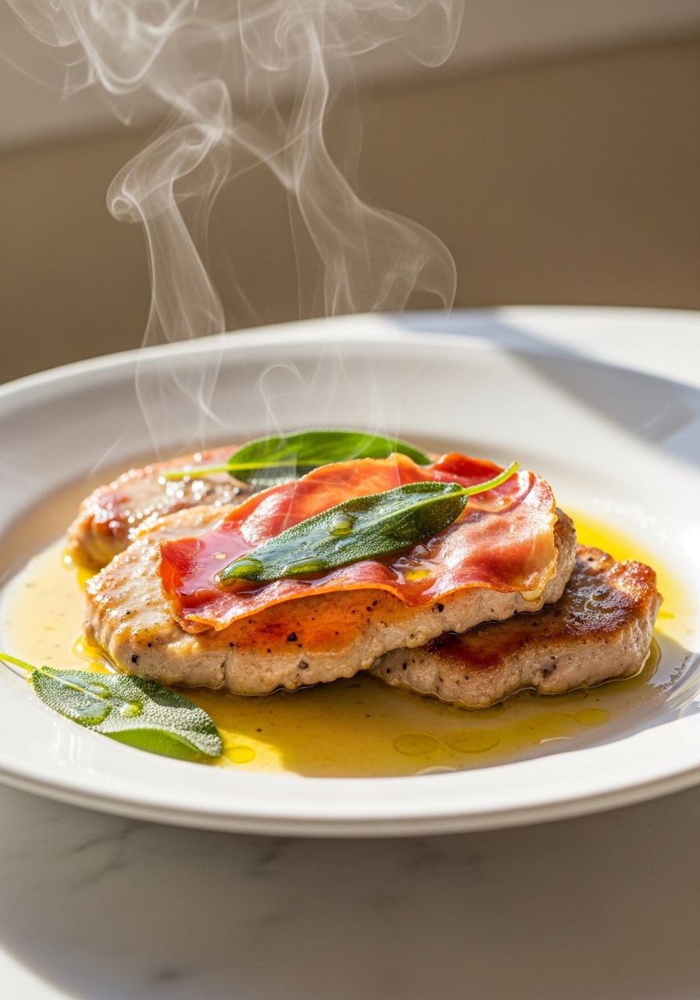
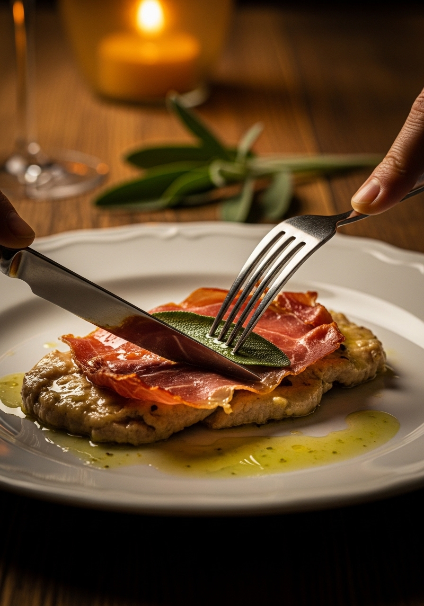

Il nome dice tutto: 'salta in bocca'. Il saltimbocca alla romana è uno dei secondi piatti più celebri della cucina laziale — fettine sottili di vitello battute, coperte da una fetta di prosciutto crudo e una foglia di salvia fresca, fermate con uno stuzzicadenti e saltate velocemente in padella con burro e vino bianco. Dieci minuti di cottura, ingredienti semplici, risultato straordinario. La Roma in un piatto.

15 MinIl saltimbocca alla romana è citato per la prima volta nella letteratura gastronomica italiana nell'800, ma le sue radici sono certamente più antiche. Il nome — 'salta in bocca' — è il più onesto della cucina italiana: descrive esattamente quello che accade quando lo mangi. La combinazione di vitello morbido, prosciutto salato e croccante, e salvia aromatica e leggermente amara è una delle più riuscite della gastronomia mondiale. A Roma il saltimbocca è un piatto quotidiano: si trova nelle trattorie di Testaccio come nelle osterie di Trastevere, preparato sempre con la stessa semplicità e la stessa velocità. Alcune ricette storiche aggiungono la fontina o la mozzarella tra la carne e il prosciutto, ma la versione autentica e più diffusa è quella senza formaggio.
Per il saltimbocca romano autentico, la scelta degli ingredienti è tutto. Il vitello deve essere noce o fesa — i tagli più teneri e delicati — tagliati sottili e battuti ulteriormente. Non usare mai maiale o pollo: il sapore delicato del vitello è fondamentale per l'equilibrio del piatto. Il prosciutto di Parma DOP è la scelta classica: dolce, morbido, con la giusta quantità di grasso che si scioglie in cottura avvolgendo la carne. Il prosciutto di San Daniele DOP è altrettanto eccellente. Evita il prosciutto cotto: il sapore è completamente diverso. La salvia deve essere fresca e con foglie grandi e integre — quella secca non funziona, perde profumo e diventa amara.
Ingredienti
Procedimento

Il saltimbocca alla romana si serve tradizionalmente con contorni semplici che non rubino la scena: patate al forno, insalata verde, spinaci al burro o carciofi alla romana. Il riso pilaf funziona bene per raccogliere la salsina. Come variante, alcune trattorie romane aggiungono una fetta di provola o fontina tra la carne e il prosciutto prima di cuocere — il formaggio si scioglie parzialmente creando un effetto filante. Il saltimbocca non si conserva bene: è pensato per essere mangiato subito, appena uscito dalla padella. Se avanza, conserva in frigorifero per massimo 24 ore e riscalda delicatamente in padella con un goccio di vino bianco.
Sì — il pollo (petto battuto sottile) è un sostituto accettabile e più economico. Il sapore sarà diverso: meno delicato e più deciso. Aumenta leggermente il tempo di cottura — il pollo richiede circa 4 minuti per lato invece di 2-3. Evita il petto troppo spesso: deve essere battuto fino a 5mm per cuocere rapidamente.
La carne è stata cotta troppo a lungo. Il vitello ha pochissimi tessuti connettivi e si cuoce in 2-3 minuti per lato. Oltre questo tempo, le proteine si contraggono e la carne diventa dura come cartone. Tieniti alla temperatura giusta (fuoco medio-alto) e non superare i tempi indicati.
Sì — sostituisci il vino bianco con brodo di pollo o di verdure. Il risultato sarà meno complesso ma comunque buono. Il vino bianco aggiunge un'acidità che bilancia il grasso del burro e la sapidità del prosciutto: è preferibile non omettere completamente la parte liquida.
Sì — togli sempre lo stuzzicadenti prima di impiattare. Fallo con cura per non separare il prosciutto dalla carne. Se preferisci, non usare lo stuzzicadenti e premi semplicemente il prosciutto sulla carne con le dita — aderisce abbastanza bene grazie al grasso naturale.
La versione originale non lo prevede. Ma la variante con fontina o provola è diffusa e gustosa: posiziona una fettina sottile di formaggio tra la carne e il prosciutto prima di arrotolare e fissare con lo stuzzicadenti. Il formaggio si scioglie parzialmente durante la cottura.